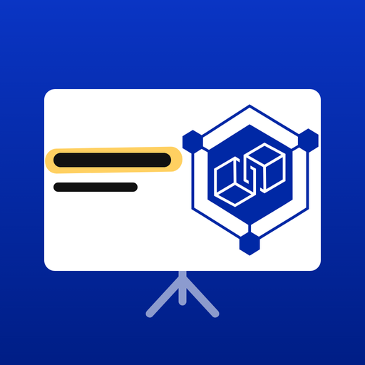

Shows a PDF as a full-screen slide show, with pen, live media and a projector view.
Blockchain & DLT Research Group
University of Zurich
Prof. Claudio J. Tessone
Designed and built with Claude, by Anthropic.
Uses PDF.js (Mozilla, Apache 2.0), pdf-lib (MIT), icons from Tabler Icons (MIT) and the IBM Plex typefaces (OFL). Your PDFs stay on this device: nothing is uploaded.
On: only the Apple Pencil draws, and fingers navigate. It switches on by itself the first time a Pencil touches the screen. Off: the mouse or a finger draws with the selected tool; choose Navigate to turn pages.
Tap to add or remove, up to 10. The pen's colour menu shows them in the order you pick them.
For troubleshooting: shows the last touch, mouse and Pencil events in a corner of the screen.
Touch and hold the button below and choose Open in New Window. Drag the new window to the external display, then tap it to fill the screen.
Projector windowWaiting for the projector window…
Move this window to the external display, then choose Fill the screen.
Later, touch the slide to show the menu button in the top-left corner.